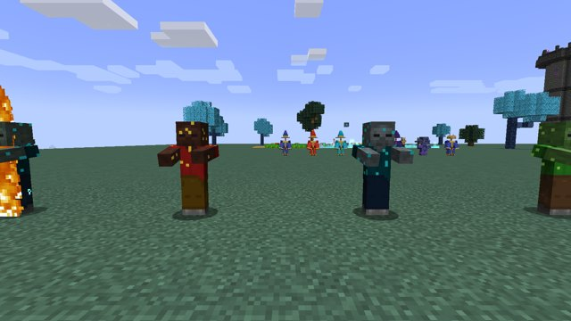
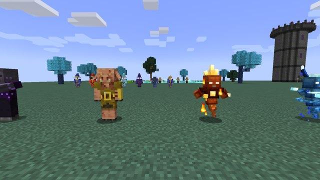
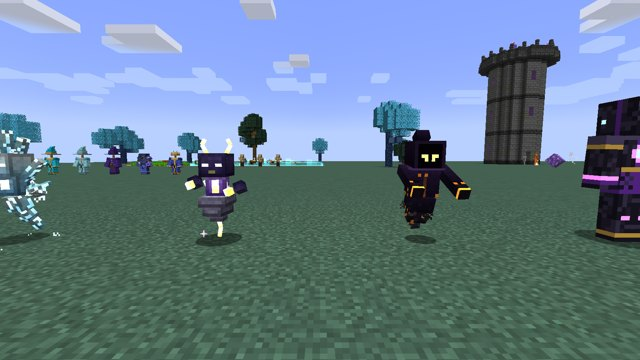
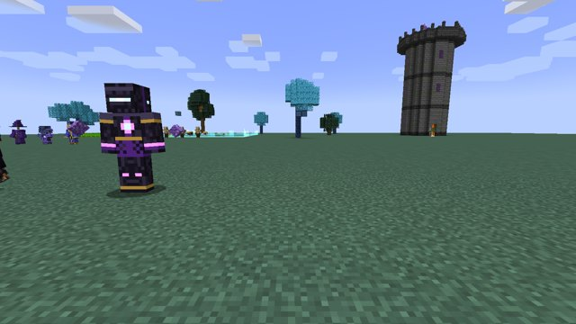
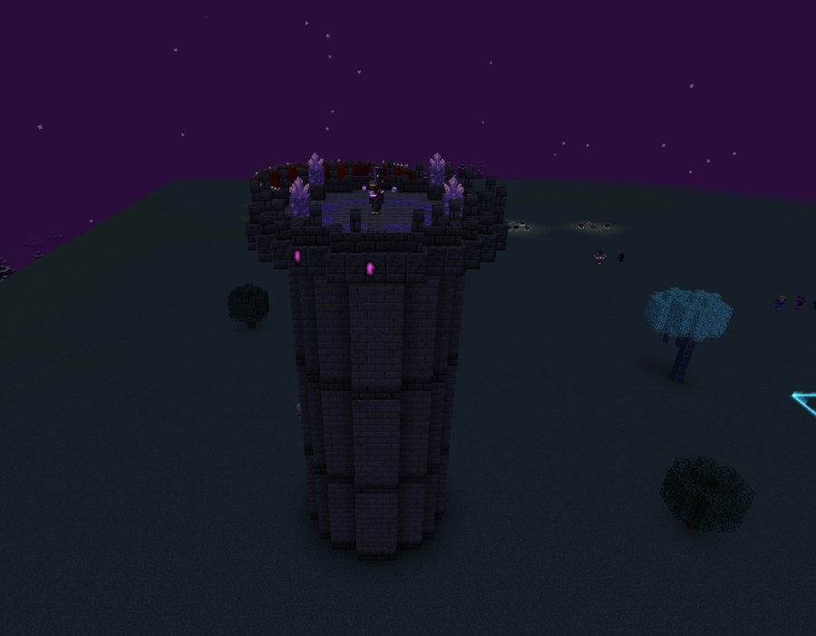
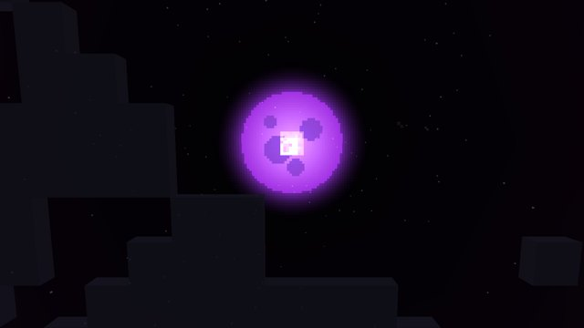
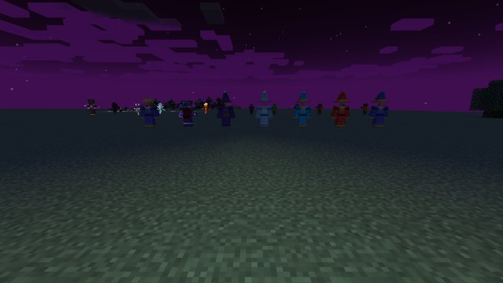
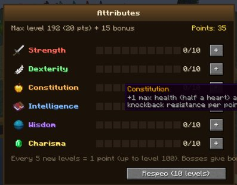
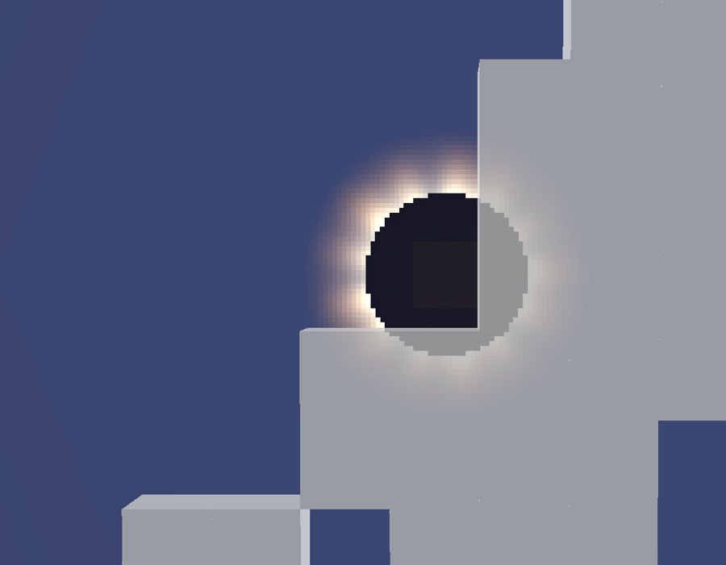
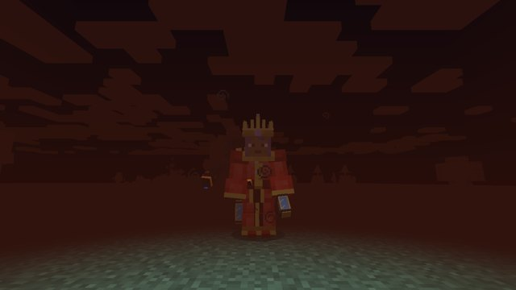

Espíritos Elementais, a Torre Arcana, a Masmorra, a Lua Roxa e os Atributos.
Espíritos Elementais
Espíritos que flutuam como blazes e aparecem (não muito comuns) à noite nos biomas do seu elemento. Cada elemento tem seu próprio corpo: o de Fogo tem coroa de chamas e punhos grandes, o de Água um rabo ondulante e um anel de água girando, o de Gelo espinhos de cristal translúcido e o de Trovão chifres em zigue-zague e um corpo de nuvem com um raio pendurado. Carregam por um instante (brilhando) e atiram dois disparos do elemento; colados em você, batem. Têm 13 corações.
Espírito
Onde aparece
Disparo
Solta
Espírito do Fogo
Deserto, savana, badlands e Nether
Queima por 4s
Pó de Blaze
Espírito da Água
Praias, rios, pântanos e ilhas no oceano
Empurra forte e apaga o fogo
Cristais de Prismarinho
Espírito do Gelo
Biomas de neve e picos gelados
Lentidão II e congela
Bolas de neve e Gelo Compactado
Espírito do Trovão
Montanhas, ou qualquer lugar durante tempestades
Choque com dano extra
Pó de Pedra Luminosa e Cobre

Zumbi de Fogo e Zumbi Contaminado

Mago Midas, Espírito do Fogo e da Água

Espíritos do Gelo e do Trovão e a Sombra

Sentinela Arcana e a Torre Arcana ao fundo
Todos podem soltar Essência de Mana (15%) e, se você matar, o Estilhaço Instável (8%, mais com Pilhagem). O de fogo se machuca na água; o de água respira debaixo dela.
Torre Arcana e Sentinela Arcana
Uma torre arcana de três andares aparece (rara) em florestas e planícies. Entre pela porta ao sul e suba pela escada de mão da parede norte: há zumbis e esqueletos no térreo, esqueletos e um Mago da Folha no segundo andar e um Espírito Elemental no terceiro. No topo aberto, a Sentinela Arcana guarda um baú com loot de meio de jogo.
Ataque
Como funciona
Rajada Arcana
Antes, linhas roxas de mira ligam ela até você por 1 segundo; depois, 3 disparos roxos que perseguem você de leve (6 de dano mágico e Fraqueza). Com o escudo, 5 disparos
Nova Arcana
Se você chega perto, ela marca um disco roxo no chão e, 1 segundo depois, explode em volta (9 de dano e empurrão). Saia do círculo ou role (R)!
Escudo
Abaixo de 75% da vida, a cada 20s fica 5s com um escudo de cristais: corta 80% do dano
Reforços
Na metade da vida marca 2 anéis roxos no chão e, 1 segundo depois, surgem neles 2 Espíritos Elementais (uma vez só)

A Torre Arcana vista de cima
A Sentinela tem 100 corações, armadura e barra de chefe roxa, não leva dano de queda e não some. Derrotada, solta 1 Diamante Instável, 2 a 4 Estilhaços, Essência de Mana e uma Orbe de Mana. O baú pode ter Estilhaços, Diamante Instável, diamantes, livros encantados, Orbe de Mana e até uma Orbe de Mana Condensada ou uma ferramenta instável.
iron_sword
Nas planícies (e planícies de girassol) às vezes aparece um Acampamento: uma clareira de terra batida com uma fogueira acesa, troncos de banco, duas barracas de lã, um poste com lanterna, baú de suprimentos, barril, bancada e feno. É raro (no mínimo uns 640 blocos um do outro, e só em chão plano). Na fogueira fica o Mestre Andarilho, um viajante de capuz verde que não morre e não sai dali.
Como funciona
Conversar
Clique nele: ele oferece ensinar a Trava de Mira em troca de um Bloco Verdadeiro
A troca
Clique nele segurando um Bloco Verdadeiro (qualquer um): ele fica com o bloco e você aprende a técnica para sempre (vale depois de morrer)
Trava de Mira (tecla Z)
Olhe para uma criatura (até 32 blocos) e aperte Z: a câmera gira até ela e fica presa, com colchetes vermelhos na mira, o nome e a vida do alvo, e um anel vermelho girando em cima dele. Solta com Z de novo, quando o alvo morre ou passa de 40 blocos
A tecla Z pode ser trocada em Opções > Controles > Magic Blocks (Trava de Mira).
Ovo Gerador de Lobisomem
À noite, em qualquer bioma da Superfície (ao ar livre), às vezes aparece um Lobisomem (nas noites de lua cheia eles aparecem bem mais): preto com franjas cinza, olhos vermelhos, garras enormes. Anda curvado em pé e corre de quatro. Todo golpe marca a área em vermelho no chão antes de acertar. Solta Pele de Lobo e às vezes Garras.
Ataque
Como funciona
Garrada
Disco vermelho na frente dele: ergue o braço e rasga
Investida
Faixa vermelha até você: agacha, dispara de quatro e fere quem estiver no caminho
Batida no chão
Disco grande em você: pula e esmaga com os dois punhos (empurra e deixa lento)
Ovo Gerador de Lobisomem Alfa
O Lobisomem Alfa (chefe, 420 de vida) vive no Covil ou, nas savanas, numa arena ao ar livre (um círculo de terra pisoteada com pedras em pé, crânios e um ninho de feno no meio). Ele nunca vai longe dela e, se ficar 3 minutos sem alvo longe do centro, volta para lá num salto de sombra. O Covil é um buraco pequeno com pedregulho musgoso e ossos no chão das taigas de pinheiros e abetos gigantes, difícil de achar. Um túnel desce até uma caverna escura com ossos, teias, um ninho de feno e um baú. Ele é maior, mais bombado e tem crina prateada; faz os mesmos golpes, mais fortes e rápidos, e na metade da vida uiva (fica mais forte e rápido e deixa você lento). Solta peles, garras e o amuleto: o Amuleto Alfa só em 10% das vezes; nas outras, o Amuleto Quebrado (também transforma, mas gasta 3 de mana por período, não tem árvore e não embute em peitoral; conserte na bancada com uma Pedra de Mana).
Como funciona
Amuleto Alfa
Vinculado a quem o veste primeiro: só funciona com essa pessoa e não se perde ao morrer. No colar do Curios, sozinho no slot do peitoral (4 de armadura) ou embutido num peitoral (Nature Infuser); aparece pendurado no peito. Na bancada, o amuleto (ou o peitoral com ele) + qualquer corante muda a cor dos olhos do lobisomem (e da pedra do colar). Com a mão vazia, segure Shift + direito por 2s para virar lobisomem (e de novo para voltar): o corpo se contorce, cresce e termina uivando
Transformado
-50% de dano recebido, +25% de dano, Velocidade I, visão noturna, sobe 1 bloco sem pular, 2,4 blocos de altura (agachado passa por buracos de 2), corre de quatro, segura os itens nas garras e tem +1 bloco de alcance, bate com as duas mãos (os golpes alternam; na vez da esquerda vale a arma da segunda mão; mão vazia = garrada de 15) e tem esquiva própria no R. Gasta 1 de mana a cada 15s
Árvore do Amuleto
Clique na Mesa de Maestria com o amuleto na mão (a árvore só abre lá). Sangue Lupino abre 3 ramos: Fúria (Garras Afiadas, Sede de Sangue, Frenesi), Resistência (Pele Grossa, Regeneração Lunar, Pelagem de Ferro) e Caça (Faro: os monstros a 20 blocos brilham através das paredes; Salto do Predador, Fôlego). O Bote (depois das Garras Afiadas) libera a investida: segure o esquerdo com a mão vazia e solte (15 a 40 de dano). Ataques novos: Esmagar (depois do Bote: Shift + esquerdo com a mão vazia, salta bem alto e cai com os punhos, 14 de dano em 4 blocos; corpo a corpo, não gasta mana), Dilacerar (depois da Sede de Sangue: a 3ª garrada seguida sangra, +4 e Murchar II) e Uivo (depois do Faro: direito com a mão vazia, a única habilidade do lobisomem que gasta mana, Força II e Resistência por 20s e os monstros a 14 blocos ficam fracos, lentos e recuam; recarga 45s), que levam à forma Alfa (maior, crina prateada, +15% de dano, +10% de redução, Velocidade II). Usar transformado sobe o nível do amuleto e dá pontos; os nós custam pontos e níveis de XP. Com a forma Alfa, um botão na tela da árvore troca entre a forma Alfa e a normal
Recargas na tela
Transformado (sobrevivência), ao lado do ícone da rolagem aparecem os ícones do Bote, Esmagar e Uivo com os segundos que faltam
Aura de fúria
Com adagas em fúria nas mãos ou com o Uivo ativo, o lobisomem fica envolto numa aura de fúria
O Lobisomem Alfa agora luta com duas adagas de ferro.
Adaga de Ferro
Existem adagas dos materiais das ferramentas vanilla: madeira, pedra, cobre, ferro, ouro, diamante e netherite. São rápidas e vão nas duas mãos (como as adagas do Leviatã), mas não entram em fúria.
Como fazer
Receita
Na bancada, o material na ponta e um graveto no cabo, na diagonal
Netherite
Mesa de ferraria: adaga de diamante + lingote de netherite + molde de melhoria
Ovo Gerador de Goblin
Nas savanas e taigas aparecem Aldeias Goblin (geradas como as vilas). Os Goblins têm 1,5 bloco de altura, uma cabeça enorme, olhões vermelhos, orelhas compridas, nariz comprido, presas e avental de couro, e andam em bando. Eles abrem portas, não caem em armadilhas de alçapão e quebram blocos simples no caminho (terra, madeira, tábuas e o que é feito delas, folhas). Podem usar armadura (menos capacete), não ferem os aliados e brigam com os outros monstros (que também atacam goblins, menos os creepers). Soltam moedas de madeira, às vezes uma Orelha de Goblin e uma Sopa de Mana.
Classe
Como luta
Guerreiro
Espada; vai na frente e luta corpo a corpo
Arqueiro
Arco, ou uma zarabatana com dardos de veneno; fica longe
Mago
Fica longe e ataca (devagar) com um Cajado Ancestral com o bloco de fogo, água, folha ou sculk
Ladino
Capuz preto e duas adagas: chega perto e gira como a Imperatriz Solar, cortando tudo em volta
Ferreiro
Mora na casa do ferreiro (toda aldeia tem uma: bigorna, alto-forno, lava e chaminé) e vende armaduras e armas
Xamã
Mora na casa do xamã (toda aldeia tem uma: telhado de azaleia, caldeirão, poções e ametista). Vende orbes de mana condensadas e os Orbes de Condensação do armazenamento; subindo de nível passa a vender orbes que guardam mais mana e compartimentos maiores (até o 64k e a Estrela de Mana)
A aldeia tem de 5 a 12 casinhas (3 modelos, com tapete no lugar da cama; cada uma com 1 a 3 goblins), caminhos de terra, Árvores de Mana e Árvores Ancestrais (as da muda, que dão maçãs douradas) e plantações de Cogumelo de Mana: canteiros quadrados de grama. O cogumelo brilha, só fica na grama e com o tempo se espalha para um dos 8 lados. 3 cogumelos + tigela = Sopa de Mana: devolve 6 de mana, se toma rápido e empilha até 16.
Bandos goblins: nas savanas e taigas (com ou sem aldeia por perto), de dia e de noite, grupos de 3 a 5 goblins aparecem de vez em quando a 24-40 blocos de você, como saqueadores, mas com mais frequência (sempre com um guerreiro, um arqueiro e um mago, e o resto sorteado). Não aparecem perto do Rei Goblin.
Ovo Gerador de Rei Goblin
Toda aldeia tem o Salão do Rei, a casa grande do meio, com trono de ouro e baús. Lá mora o Rei Goblin (chefe, 320 de vida): enorme e bombado, de coroa de ouro, ombreiras e capa, com uma espada pesada. Ele passeia pela aldeia. Cada golpe é marcado em verde no chão antes.
Ataque
Como funciona
Corte
Disco na frente dele: ergue a espada e desce
Giro
Anel em volta: gira com a espada
Salto
Disco em você: pula e cai em cima
Investida
Faixa até você: corre e atropela
Combo
Três talhos seguidos andando para a frente; o último, de cima, é o mais forte
Fenda
Faixa até você: crava a espada e uma rachadura corre pelo chão jogando para cima
Grito de Guerra
Anel em volta (abaixo de 60% da vida): berra, empurra quem está perto e fica mais forte e mais rápido
Transformado em goblin ou com o respeito dos goblins, clique no Rei para abrir a tela de desafio: um duelo só com ele. Vencer o Rei (no desafio ou numa briga normal) dá o respeito dos goblins, e nenhum goblin continua brigando com você.
A briga com o Rei é só dele: enquanto ele luta, os goblins saem de perto e não atacam quem está enfrentando o Rei. Ele não tem barra de vida.
O Rei não morre: derrotado, ele volta para casa, deita no tapete por 5 minutos e levanta curado. Quando levanta, os goblins que morreram na aldeia voltam (saem do salão), inclusive o ferreiro e o xamã. Na primeira derrota sempre solta a Espada Pesada Goblin (depois, 15%): lenta, muito forte, empurra longe e ocupa as duas mãos: ao empunhar, o item da segunda mão vai para o inventário (sem espaço, a hotbar volta para o slot anterior e aparece "Eu preciso das duas mãos para usar isto"). As habilidades da Árvore da Espada só funcionam com ela transformado em lobisomem. Também espalha moedas de madeira.
Ovo Gerador de Ork
Nas florestas, planícies, savanas e taigas, de dia e de noite, às vezes aparece um Ork (raro, nunca dois perto): um gigante verde de 5 blocos e 330 de vida, com presas, calça preta, cinto, botas com tachas e faixas nos pulsos. Ele atravessa as copas quebrando as folhas. Cada golpe é marcado em vermelho antes.
Ataque
Como funciona
Rugido
Disco grande em volta: urra, empurra para longe e deixa lento
Pisão
Bate o pé e solta uma onda no chão que se espalha: pule por cima dela
Esmagada
Disco na frente: ergue os braços e esmaga
Salto
Disco em você: pula e cai em cima
Também tem a Investida (faixa vermelha: dispara de cabeça baixa), a Varrida (leque na frente: gira o machado de lado) e o Pedregulho (disco em você: arranca um pedaço do chão, ergue sobre a cabeça e arremessa em arco).
Metade deles carrega o Machado do Ork, que solta em 5% das vezes: 40 de dano, bate 2x mais devagar que um machado de pedra e derruba a árvore inteira. Todo Ork solta de 1 a 6 Ossos de Ork (para o ferreiro goblin), couro e ferro.
Espada de Osso de Ork
Depois de ganhar a confiança do Rei Goblin (vencendo ele), falar com o ferreiro goblin abre a Forja do Ferreiro: abas Armas, Armaduras, Ferramentas e Magia, a peça grande sobre a bigorna (setas ou rodinha do mouse para trocar), a fileira com todas as peças da aba e, à direita, os materiais com quantos você tem. Forjar gasta os materiais do inventário; Trocas abre a loja normal dele.
Peça
Materiais
O que é
Adaga de Osso de Ork
1 couro + 4 Ossos de Ork
35 de dano. Uma em cada mão entra na Fúria como as adagas da besta, mas sem o dash vermelho no R e gastando 1 de mana a mais
Espada de Osso de Ork
1 couro + 5 Ossos de Ork
45 de dano
Katana do Ronin
3 Metal Solar + 2 Tecidos de Mago + 2 Barras do Vazio + 2 Cristais Abissais + 2 Garras de Leviatã
A lâmina dos deuses, a mesma do Ronin: 100 de dano e 3 encaixes de pedra. Só para quem passou por todas as provações do Ronin
Peças de malha
Correntes
A cota de malha que só os goblins fazem
Ferro
Lingotes e gravetos
Armas, armaduras e ferramentas de ferro, escudo, besta, tesoura e correntes
Espelho da Alma Inativo
8 Fragmentos de Espelho + 1 slime
Só sai daqui (não tem mais receita na bancada)
Bolsa Mágica Melhorada
5 Tecidos de Mago + 1 Bolsa de Orbes + 2 linhas + 1 ouro
Guarda 5 orbes (as da bolsa velha passam para a nova)
O ferreiro mora na casa do ferreiro de toda aldeia goblin.
iron_sword
A Árvore da Espada vale para qualquer espada (vanilla, do mod ou de outros mods; adagas, luvas, lança e martelo não contam). Clique na Mesa de Maestria segurando uma espada (com a Espada de Manilium com bloco, Shift + clique abre a árvore do bloco). Os pontos vêm de bater e derrotar criaturas com espadas; cada nó custa pontos e níveis de XP. São 3 ramos de 4 nós que se juntam no Mestre da Espada.
Nó
O que faz
Fio Afiado
+5% de dano com espadas (a raiz)
Estocada Carregada
Ativa (carregada): segure o botão em que ela está equipada: a barra enche embaixo da mira e a lâmina solta faíscas quando está cheia. Solte e você dispara numa estocada que rasga o caminho (1,5x a 3x o dano da espada). Recarga de 3s
Saque Rápido
A estocada carrega 35% mais rápido
Estocada Perfurante
A estocada vai mais longe, atravessa todos no caminho, bate 25% mais forte e faz sangrar. Precisa da 1ª provação do Ronin
Estocada do Vento
No fim da estocada sai um corte de vento que segue em frente. Precisa de todas as provações do Ronin
Pulo Duplo
Passiva: no ar, aperte pular de novo para um segundo pulo (uma vez até tocar o chão). Vale aprendido em qualquer das duas árvores
Lâmina Afiada
+10% de dano com espadas
Golpe Crítico
20% de chance de um golpe causar 1,6x o dano
Corte Profundo
Os críticos fazem sangrar (Wither II por 3s)
Redemoinho
Ativa (carregada): segure e solte para girar com a espada esticada, cortando tudo em volta várias vezes (mais carga = mais tempo girando). Recarga de 3,5s
Guarda
-10% de dano recebido segurando uma espada
Vampirismo
Os golpes de espada curam 8% do dano
Firmeza
60% menos empurrão e mais 5% de redução de dano
Contra-Ataque
Ativa (no clique): por 0,6s o próximo golpe corpo a corpo de frente é bloqueado e devolvido com 1,5x o dano. Recarga de 2,5s
Mestre da Espada
Precisa dos 3 finais e de todas as provações do Ronin: +10% de dano e as habilidades recarregam 2x mais rápido
Imbuir Mana
Técnica do Ronin (segurar): enquanto o botão fica apertado a mana corre pela lâmina (chamas azuis) e os golpes, inclusive a Estocada e o Redemoinho, batem 50% mais forte. Gasta 1 de mana ao começar e mais 1 a cada 3s segurando
Aparar
Técnica do Ronin (clique): como o aparar do Escudo Solar, mas em vez de devolver ele anula: por 1s o próximo golpe, magia ou projétil de frente não causa dano e quem atacou fica atordoado 2s (não consegue atacar nem se mover; estrelas girando sobre a cabeça). Recarga de 3s
Habilidades nos botões do mouse
Na tela da árvore, à direita, ficam os dois botões do mouse (o desenho do mouse com o botão aceso). Clique no espaço de um botão para trocar a habilidade ativa dele entre as que você já comprou e Sem habilidade (clique esquerdo avança, direito volta). A mesma habilidade não fica nos dois botões. A Estocada começa no botão esquerdo. As habilidades carregadas (Estocada, Redemoinho) disparam ao soltar; as de clique (Contra-Ataque, Aparar) na hora; a de segurar (Imbuir Mana) fica ligada enquanto o botão está apertado. Habilidades corpo a corpo não gastam mana, só o Imbuir. Em sobrevivência, as habilidades equipadas aparecem ao lado do ícone da rolagem com a recarga. Carregando no botão direito, a segunda mão não bate.
Em terceira pessoa toda espada tem animação de corte cinematográfica, e cada habilidade tem a sua: a estocada (carga e avanço com o corpo inteiro), o Redemoinho (o corpo todo gira com a espada esticada) e o Aparar (lâmina de pé na frente do corpo).
Adaga de Ferro
A Árvore das Adagas vale para qualquer adaga (de minério, de cristal instável, as da besta, a solar, a de osso de ork e adagas de outros mods). Clique na Mesa de Maestria segurando uma adaga. Os pontos vêm de bater e derrotar criaturas com adagas. São 3 ramos de 4 nós que se juntam no Mestre das Lâminas.
Nó
O que faz
Lâminas Ligeiras
+5% de dano com adagas (a raiz)
Giro das Lâminas
Ativa (carregada), com uma adaga em cada mão: segure para enrolar o corpo e solte para girar cortando tudo em volta. Recarga de 4s
Giro Ligeiro
O giro carrega 35% mais rápido
Ciclone
O giro dura mais, alcança mais longe, bate 15% mais forte e puxa os inimigos
Dança das Lâminas
Ativa (carregada), uma adaga em cada mão: dispara de 4 a 8 blocos para a frente, intocável, cortando cada inimigo no caminho. Recarga de 4s
Fúria da Besta
Ativa (carregada), uma das primeiras: com uma adaga de fúria em cada mão (da besta, Celestial, do Caos, Solar ou de Osso de Ork), segure o botão em que ela está equipada por 3s e solte para entrar em fúria (Força, Regeneração, aura vermelha e o dash vermelho no R; gasta mana a cada 20s). O atalho antigo (Shift + direito 3s) também só funciona com ela comprada
Lâminas Envenenadas
25% de chance de envenenar (Veneno II por 3s)
Apunhalar
+50% de dano acertando pelas costas
Execução
+60% de dano em alvos com menos de 30% de vida
Passo Sombrio
Ativa (no clique): aparece nas costas do inimigo na mira (até 14 blocos); o próximo golpe em 3s bate 50% mais forte. Recarga de 6s
Pulo Duplo
Passiva: no ar, aperte pular de novo para um segundo pulo
Esquiva
10% de chance de desviar de um golpe corpo a corpo segurando uma adaga
Passo Cortante
Passiva (depois da Esquiva): com uma adaga na mão, a esquiva (R) para a frente vira um passo rápido de 4,5 blocos que corta quem estiver no caminho; para os lados e para trás continua a rolagem
Combo
Técnica do Pantan0 (clique): a outra habilidade equipada é usada 3 vezes seguidas, com 1s entre elas (as carregadas saem cheias); depois 10s de recarga
Embalo
Cada golpe com adaga dá Velocidade II por 2s
Acrobata
Quedas contam 6 blocos a menos e tiram metade do dano
Fantasma
Ao se esquivar, fica invisível por 2s e o próximo golpe bate 50% mais forte
Mestre das Lâminas
Precisa dos 3 finais: +10% de dano e as habilidades recarregam 2x mais rápido
As habilidades ativas vão nos botões do mouse do mesmo jeito que na Árvore da Espada (o Giro começa no esquerdo).
Em terceira pessoa as adagas têm golpes rápidos alternando as mãos (os cortes formam um X), o giro com os braços abertos, a Dança (corpo baixo com as adagas para trás e passadas rápidas) e o Passo Sombrio (as duas adagas cravam juntas de cima).
Ovo Gerador de Ronin
Nos bosques de cerejeira fica o Dojo do Ronin: um salão japonês aberto sobre um tablado de madeira escura com tatame de bambu, pilares vermelhos, grade baixa em volta (a arena), telhado de telhas escuras em camadas e lanternas. No meio está o Ronin, um chefe maior que o jogador: chapéu de palha, máscara de samurai, ombreiras laqueadas, capa carmesim e a Katana do Ronin, que ele segura com as duas mãos. Durante o desafio os olhos dele brilham em vermelho. Ele não tem barra de vida e, fora de um desafio, nada o machuca. Fale com ele para abrir a tela da provação: os itens pedidos (dá para entregar aos poucos) e o botão Desafiar, que acende quando tudo foi entregue.
Como funciona
1ª provação
Não pede nada. 1000 de vida: Corte (disco na frente), Sequência (três cortes avançando) e Estocada (faixa até você e dispara em linha reta). Vencer libera a Estocada Perfurante
2ª provação
Pede 10 Orelhas de Goblin. 1500 de vida e os mesmos golpes, mas metade deles com mana na espada: marcados em azul, com chamas azuis na lâmina, e batem 50% mais forte. Vencer: você escolhe entre dois ícones, Imbuir Mana ou Aparar
Última provação
Pede 5 Ossos de Ork, 2 Garras de Leviatã, 1 Estrela do Vazio e 5 Metal Solar. 2000 de vida, todos os golpes com mana e três novos: Corte Relâmpago (um X no chão em volta de você; ele atravessa as duas diagonais num piscar de olhos), Lua Crescente (gira com um anel marcado em volta e solta uma onda de corte pela faixa) e Queda do Céu (salta, paira sobre você com o disco marcado e cai com a katana). Vencer ensina a outra técnica, libera a Estocada do Vento e o Mestre da Espada, dá o Chapéu de Palha do Ronin e manda você atrás de um ferreiro
Chapéu de Palha do Ronin
O troféu das provações: inquebrável, +5% de dano com espadas (não adagas); como capacete dá +4 de armadura; no slot de cabeça do Curios só o dano
Regra do dojo
Teto de dano
Ele não recebe mais de 20 de dano por golpe, nem refletido
Projéteis e magias
Em qualquer fase, a espada imbuída de mana devolve para quem lançou
Adagas
Não ferem o Ronin ("É sério? Você trouxe facas para uma briga de espada?")
Escudo
Bloquear a Estocada com escudo desativa o escudo
Intrometidos
Se outro jogador bater nele no meio de um duelo, ele recupera toda a vida e passa a ter 3x a vida e o dano, gastando 4x as armaduras e escudos
Ritmo
Ele ataca com calma: pausas longas entre os golpes
Só quem desafiou consegue machucar o Ronin. Se você morrer, sair de perto (40 blocos) ou mudar de dimensão, o desafio acaba e ele volta ao centro curado (os itens entregues não se perdem). Vencido, ele não morre: volta para o centro do dojo.
Ovo Gerador de Pantan0
No Pântano Abissal (Vazio) às vezes aparece a Arena do Pantan0: um tablado redondo sem paredes, com froglight no centro, anel de ametista com velas roxas, tijolos de lama com musgo, borda de pedra-negra e mangue, postes com lanternas de alma, estandartes roxos e cristais. Nenhum monstro nasce nela nem perto. No meio está o Pantan0, mestre das adagas, com duas Adagas Abissais. Ele só conversa com quem lhe entrega uma sopa de cogumelos (a tela de provação, como a do Ronin). Os golpes dele são sempre avisados em roxo.
Como funciona
1ª provação
1500 de vida: Investida (faixa), Giro com as adagas (anel em volta) e Salto em direção a você (disco). Vencer ensina o Giro das Lâminas
2ª provação
Ele invoca 4 Golens Fragmentados e fica observando. Eles não soltam nada; se você se afastar da arena eles somem e a provação falha. Derrotar os 4 dá a Sopa Abissal
3ª provação
2000 de vida: Combo (três golpes seguidos, 1s entre eles), Investida, Giro, Salto e, aos 50% da vida, a Fúria: volta ao centro, entra em fúria roxa e volta mais rápido e forte. Vencer ensina o Combo e dá 3 Barras Abissais
Regras
Só adagas o ferem ("Eu só acho que 2 é melhor do que um, não?"); no máximo 20 de dano por golpe; projéteis e magias voltam; um intrometido no duelo o deixa com 3x a vida e o dano
Item
O que é
Sopa Abissal
Parece a sopa de cogumelos: 5 usos, cada gole (o tempo da Sopa de Mana) recupera 3 corações e 3 de fome e lembra as lutas de HG. Vazia vira o Pote Abissal: na bancada com um cacto, qualquer cogumelo ou semente de cacau volta a ter 5 usos
Adaga Abissal
A adaga do Pantan0, em 3D: lâmina de obsidiana com o sulco de ametista brilhando, guarda em crescente e gema. 80 de dano; uma em cada mão entra na Fúria roxa. Só sai com 3 Barras Abissais na diagonal
Barra Abissal
Da 3ª provação do Pantan0 ou do Minério Abissal: um só, raríssimo, por região de Pântano Abissal, escondido na pedra do Vazio (picareta de diamante)
Com shaders (Oculus/Iris) a borda cósmica do Manilium vira uma galáxia pintada e os olhos brilhantes das criaturas não aparecem mais através das paredes.
Espelho da Alma
O Espelho da Alma guarda as almas das criaturas que você derrota e deixa você virar elas. Primeiro peça o Espelho da Alma Inativo ao ferreiro goblin (na forja dele, depois de ganhar a confiança do Rei Goblin): 8 Fragmentos de Espelho das Almas + 1 slime. Depois desperte-o no Altar de Rituais (o inativo no altar + Orbe de Mana, Estrela do Nether, Essência de Mana e um Bloco Verdadeiro). Funciona só de estar no inventário (ou no Curios) e não cai ao morrer.
Como funciona
Almas
Com o espelho no inventário, toda criatura que você derrota pela primeira vez tem a alma absorvida (a alma voa até você)
Virar (tecla ')
Abre a tela de formas: cada alma aparece em miniatura com o custo. Clique para virar a criatura (tamanho, modelo e características); Forma humana volta ao normal
Custo de mana
Comuns (monstros e animais normais, goblins): 1 a cada 25s. Mais fortes (mais de 40 de vida, como o golem de ferro): 2 a cada 25s. Chefes até 500 de vida: 3 a cada 20s. Mais fortes que isso: 4 a cada 15s. Sem mana, volta a ser humano
Características
Sendo monstro, os monstros não te atacam (a menos que você bata neles; os chefes atacam). Zumbis e esqueletos pegam fogo no sol. Abelhas, morcegos, ghasts, blazes, fantasmas e afins voam. Quem não queima fica imune a fogo; aquáticos respiram na água; aranhas sobem paredes; galinhas caem devagar; cavalos, lobos e coelhos correm mais; coelhos e slimes pulam mais
Poderes
Segure o botão esquerdo com a mão vazia: creeper explode (segurando 1,5s), enderman teleporta, blaze, ghast, wither e dragão atiram, esqueleto atira flecha, golem de ferro esmaga o chão, bruxa joga poção, evocador chama presas, warden solta a rajada sônica, golem de neve joga bolas de neve
A Árvore do Espelho abre clicando na Mesa de Maestria com o espelho na mão. Os pontos vêm das almas novas e do tempo transformado: Elo da Alma (cura e fica invisível ao trocar), Alma Leve e Alma Serena (a mana dura mais), Instinto e Eco (poderes recarregam mais rápido e ficam mais fortes), Vitalidade e Forma Ágil (+2 corações, mais velocidade e voo) e o Mestre das Formas (toda forma gasta 1 de mana a menos).
Moeda de Madeira
Os goblins negociam em Moedas de Madeira (eles soltam as moedas e também compram coisas de você). Mas só negociam com quem é goblin ou com quem eles respeitam. O Rei Goblin não negocia.
Como funciona
Como goblin
Transformado em goblin pelo Espelho da Alma: clique num goblin para abrir a loja dele
Duelo
Transformado em goblin, Shift + clique num goblin desafia ele para um duelo (os outros não entram). Deixe ele quase sem vida (ele se rende, não morre) e você ganha o respeito dos goblins
Respeito
Para sempre (mesmo morrendo): os goblins negociam com você sem a forma e só o goblin em que você bater revida
Níveis
Como os aldeões, todo goblin sobe de nível (1 a 4) conforme você negocia com ele (barra de progresso na loja) e passa a vender coisas melhores
Classe
Nível 1
Nível 2
Nível 3
Nível 4
Guerreiro
Espada de ferro, escudo
Peças de malha
Espada com Afiação II, capacete de ferro
Espada de diamante, escudo com Inquebrável III
Arqueiro
Flechas, arco
Flechas de veneno, zarabatana
Besta, flechas espectrais
Arco com Força III, flechas de dano
Mago
Sopa e Cogumelos de Mana
Essência de Mana, poção de cura
Frascos de experiência, regeneração
Força II, maçã dourada
Ladino
Adaga de ferro
Adaga de ouro, invisibilidade
Pérolas do fim, velocidade
Adagas de esmeralda e de diamante
Ferreiro
Botas e machado de ferro
Peitoral e calças de ferro, escudo
Peitoral com Proteção II, bigorna
Peitoral e picareta de diamante
No nível 1 eles também compram: o guerreiro ferro e couro, o arqueiro linha e penas, o mago glowstone e lápis, o ladino pepitas de ouro e olhos de aranha, o ferreiro ferro e carvão, o xamã ossos.
Orelha de Goblin
No Acampamento, junto do Mestre Andarilho, agora fica o Caçador (chapéu de couro e aljava). Clique nele com Orelhas de Goblin na mão: ele paga 2 a 4 Moedas de Prata por orelha. Sem orelhas, ele abre a loja dele (flechas, flechas espectrais, arco com Força, besta com Recarga Rápida, luneta, cenouras douradas e maçã dourada), paga em prata.
As orelhas só caem de goblins derrotados por você (45%, mais com Pilhagem).
Luva de Lobisomem
A Luva de Lobisomem é uma arma rápida que se veste na mão: aparece no braço do jogador (primeira e terceira pessoa), sem precisar do Curios. Vai nas duas mãos: com uma em cada, os golpes alternam como as adagas.
Receita na bancada: Garras de Lobisomem na coluna da esquerda e Pele de Lobo nas outras duas, com o meio da direita vazio.
Flor do Escolhido
A Flor do Escolhido é raríssima e nasce em qualquer floresta (2 blocos de altura, brilha). Quem a pega primeiro é escolhido: ela fica vinculada a você.
Como funciona
Mana de longe
Plante-a com um Poço de Mana dentro do quadrado 5x5 em volta dela (a flor no meio): o poço enche a sua mana de qualquer distância, gastando 6x mais energia
Carrega a região
A flor mantém carregados os chunks em volta (o poço, o Nature Charger e os cabos continuam funcionando sem ninguém perto)
O preço
Os monstros vêm atrás dela (até 20 blocos) e arrancam as pétalas (20 de vida; se ninguém encostar por 10s, ela se recupera). Se ela morrer, não solta nada e você morre junto (mesmo fora do jogo: morre ao entrar)
Capacete de Lobo
A Armadura de Lobo é feita de Pele de Lobo (mesmas receitas da armadura de couro). Protege como ferro, o capacete é uma cabeça de lobo com a mandíbula de cima sobre o rosto, e o peitoral, as calças e as botas têm pelagem, patas e garras.
Como funciona
Esquiva
Cada peça recarrega a rolagem 3 ticks mais rápido (12 ticks com as 4)
Cor
Pinte como a armadura de couro: na bancada junto com corantes
Masmorra Elemental
Uma masmorra subterrânea e rara (entre as camadas -30 e 20, em qualquer bioma da Superfície). No centro, um salão com o baú final e um spawner de zumbi ou esqueleto; dele saem 4 corredores com armadilhas de flechas (placas de pressão atravessando o corredor) até 4 salas, uma por elemento. Cada sala tem o seu Guardião: um Espírito Elemental com 40 corações e mais dano, que não sai da sala, e um baú do elemento.
Sala
Como é
Baú do elemento
Fogo (norte)
Tijolos do Nether, blocos de magma e poços de lava
Varas de Blaze, Creme de Magma
Água (sul)
Prismarinho, lanternas do mar e uma piscina
Fragmentos de Prismarinho, às vezes Coração do Mar
Gelo (leste)
Gelo compactado e azul, buracos de neve fofa
Gelo Azul, Gelo Compactado
Trovão (oeste)
Cobre e para-raios
Barras de Cobre, Para-raios
Os baús das salas podem ter o Bloco Corrompido do elemento e peças da Armadura Elemental já com o elemento. O baú final tem estilhaços, Diamantes Instáveis, Orbes, diamantes, livros encantados e às vezes um Bloco Corrompido, uma ferramenta instável ou um Peitoral Elemental. Cada Guardião solta 2 ou mais Estilhaços Instáveis e Essência de Mana.
Lua Roxa
Em uma noite rara (1 em 10, a partir do 4º dia) ou chamada pelo Ritual da Lua Roxa, a lua fica roxa, o céu e a neblina ficam roxos e ninguém consegue dormir. Vêm 5 ondas de monstros, uma por minuto, em volta de cada jogador na Superfície: zumbis, esqueletos, bruxas, magos e Espíritos Elementais (brilhando), cada onda maior. Depois da última chega o Arauto da Lua Roxa: uma Sentinela Arcana com 150 corações. Todos os monstros das ondas têm contorno roxo brilhante (dá para ver através das paredes) e não somem sozinhos. Se a meia-noite chegar antes de você vencer, a lua para no meio do céu até todos os monstros roxos e o Arauto caírem (a barra mostra quantos faltam); depois o tempo volta a correr.

A lua roxa no alto do céu

A noite da Lua Roxa
Os monstros da Lua Roxa soltam Fragmentos Lunares (35%). O Arauto solta 4 a 6 fragmentos, Diamante Instável e dá 1 ponto de habilidade. A Lua Roxa acaba quando amanhece.
Atributos (tecla K)
Aperte K para abrir os Atributos, no estilo de D&D. A cada nível de XP que você alcança pela primeira vez ganha 1 ponto (cada atributo vai até 100; gastar níveis encantando não tira pontos). Chefes dão pontos bônus (golem: 2; Sentinela Arcana e Arauto da Lua Roxa: 1) e o Ritual do Conhecimento dá 1. Cada atributo vai de 0 a 100 e os primeiros pontos rendem mais: com 10 pontos você já tem cerca de 19% do máximo, com 25 quase metade, com 50 três quartos (passe o mouse num atributo para ver o bônus atual). Redistribuir tudo custa 10 níveis de XP. Os pontos não se perdem ao morrer.
Atributo
Com 100 pontos
Força
+6 de dano corpo a corpo
Destreza
+20% de velocidade e +25% de velocidade de ataque; a rolagem recarrega de 2s até 0,75s e fica até 0,9s invencível
Constituição
+10 corações e 40% de resistência a empurrão
Inteligência
+10 de mana máxima e +40% de dano das habilidades dos Blocos Mágicos
Sabedoria
A mana volta 1,8x mais rápido e -35% de dano mágico/elemental recebido
Carisma
+3 de sorte e 20% de chance de uma habilidade não gastar mana

A tela de Atributos (tecla K)
Fragmento do Eclipse
Em um dia raro (1 em 12, ao meio-dia, a partir do 5º dia) ou chamado pelo Ritual do Eclipse, a lua cobre o sol: o céu escurece, o horizonte fica alaranjado e um disco negro com coroa de fogo toma o lugar do sol por 2 minutos. Enquanto dura, Sombras surgem da fumaça em volta de cada jogador na Superfície (2 a 3 a cada 10s, até 8 perto de você).
Como é
Sombra
Espectro encapuzado de olhos laranja que flutua com uma cauda de fumaça. 12 corações, golpe de 5 que cega por 2s.
Só morre perto de luz
Sem luz, os golpes atravessam a Sombra. Ela só toma dano com luz de bloco 7+ onde está, se alguém a até 6 blocos segura uma tocha, lanterna ou a Lanterna de Mana (na mão ou no cinto), ou com fogo.
Fragmento do Eclipse
As Sombras soltam (40%, mais com Pilhagem). Faz a Torre de Cristal.
Fim
Quando o eclipse acaba, as Sombras se desfazem na luz do sol.

O sol coberto

Sombras no eclipse
Ovo Gerador de Mímico
O Mímico anda pela Superfície disfarçado de qualquer criatura do mod (pacífica ou não), passeando devagar como ela. Se você chegar a 4 blocos ou ficar olhando para ele, o disfarce treme, incha e estoura num monstro de espelho de 2,5 blocos: corpo de vidro escuro, um espelho rachado no peito que se abre como uma boca vertical cheia de dentes, seis olhos acesos e braços com lâminas de vidro. Se apanhar disfarçado, se revela na hora (e o primeiro golpe pega pela metade).
Ataque
Como é
Retalho
Um disco prateado na frente dele: cruza as lâminas no alto e corta em X
Salto
Um disco prateado em você: agacha, pula e cai espalhando cacos
Reflexo
Uma faixa prateada até você: desliza como um reflexo, corta e cega
80 de vida. Solta 1 a 3 Fragmentos de Espelho das Almas.